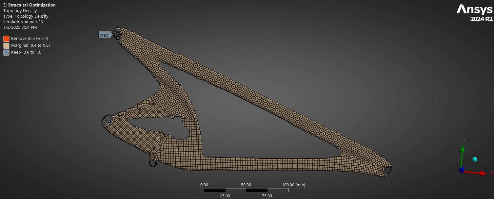

The goal of an FSAE aerodynamics package is simple: create downforce to extract more performance from the tires. However, at the relatively slow speeds FSAE cars run, aerodynamic devices are hard-pressed to find meaningful performance gains. Therefore, careful control of the flow structures and maximization of ground effect interactions is required.
The front wing was developed first due to its restricted rules box. Initially Benzing 153-105 airfoils were used, but due to their high camber , they were very sensitive in ground effect and did not stack neatly. Three NACA6412 airfoils were explored and found to have much higher performance and stability.
2D geometry optimization was done using a mix of Solidworks and ANSYS Fluent. The geometry of a multi-element airfoil can be broken into chord length, angle of attack, overlap, and step. These dimensions were parameterized and imported into ANSYS. Because there were issues with solver initialization in ANSYS, I wrote a python script to automatically refresh the geometry, remesh, and recalculate every iteration for greater accuracy and precision. In total, I could quickly and automatically iterate through geometries by specifying a single baseline.
Particular care was taken to produce two counterrotating vortices off the endplates to manage the front tire wake. This prevented dirty air from being upwashed into the rear wing and reducing the overall downforce. In future iterations I plan on further investigating strengthening and outwashing the vortices to increase their usage, as well as creating additional vortices to seal the floor. Additionally, the inherent nature of the Main Roll Hoop creates a large wake that does interfere with the rear wing. Other teams mitigate this by raising the mainplane above the wake, however, my rear wing is straight for easier and quicker manufacturing.

The front wing mounting was designed with the goal of having minimal presence and weight. It needed to withstand maximum downforce, lateral cornering forces, and drag from the car spinning out. FEA was performed in ANSYS and coupled with topology optimization studies to create a more efficient solution. To allow the mounts to be so light, cables were added to support lateral loads. The entire mounting solution in total weighs less than 1 lb.
The rear wing went through a similar design process, with the exception of being further optimized for efficiency and to best compliment the rear wing. With adjustable trailing flaps, we can test various aerodynamic balances between 40-60% through 60-40%.
This project is currently still ongoing, and I am super excited to test the car and take it to competition this summer!